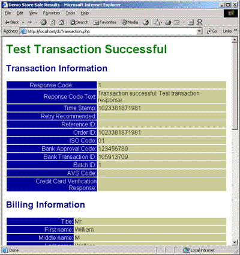

| PHP Transaction Client v1.6.1 API Specification |
| WARNING: PHP may be installed as a module for a web server, or as a CGI executable. The SAPI modules are unstable at the time of this release. It is advised to use the CGI executable version of PHP. |
The PHP Plug requires:
/paygateway on the document path of the web server.Paygateway.php, CountryCodes.php, demopaypage.html
and doTransaction.php to /paygateway.Paygateway.php is the only file you need to develop your own
PHP applications that use the Paygateway Payment Service. CountryCodes.php
provides a mapping of country names to their two character country codes.
The other two files are a sample to demonstrate the use of the PHP Plug and
to test your system. Navigate to the demopaypage.html page using
a web browser. This will present you with a test page. Click on the submit
button to attempt a test transaction using the Paygateway Payment Service.
You should see results similar to those shown in the screen shot below.|

Figure 1: Successful Test Transaction |
{kind=link}